矩阵运算 | Matrix Operations
一些定义
矩阵项记法
对于一个 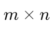 的矩阵 A，其第 i 行第 j 列的项可记为 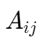。
矩阵对角项 | diagonal entries
位于矩阵主对角线,,上的元素。
对角矩阵 | diagonal matrix
非对角项全为零的  矩阵。
矩阵。
单位矩阵 | identity matrix
对角项值全为 1 的特殊对角矩阵。
零矩阵 | zero matrix
所有项的值为 0 的矩阵。
矩阵相等
对于两个相等的矩阵，其具有相同的行数和列数，且相同位置的项的值相同。
矩阵相加
对于两个同为 的矩阵 A 与 B，则 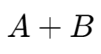 即为将 A 与 B 相同位置的项相加。
注意
无法对行数或列数不同的两个矩阵相加。
标量相乘 | Scalar multiplication
对于一个标量 r 和一个矩阵 A，对其进行标量相乘即将该矩阵的每一项乘上该标量。
矩阵相乘 | Matrix multiplication
对于一个 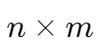 的矩阵 A 和 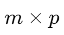 的矩阵 B，如：
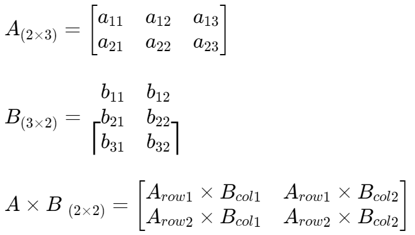
注意
多数情况下，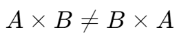
对于 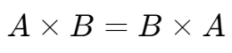 的特殊矩阵 A B，其被成为可交换矩阵,,
矩阵转置 | Matrix Transpose
对于 的矩阵 A，其转置应为 的矩阵 AT。
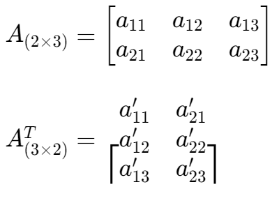
- 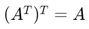
- 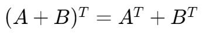
- 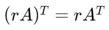
- 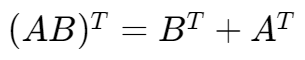
矩阵转置性质
矩阵的逆 | Matrix Inverse
对于一个矩阵 A，若有矩阵 C 使得 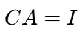 且 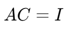，则 C 为 A 的逆。
- 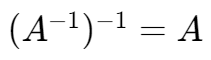
- 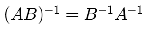
- 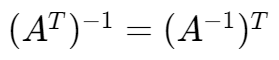
矩阵的逆的性质
矩阵求逆
对于矩阵
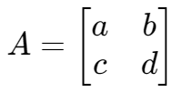有增广矩阵
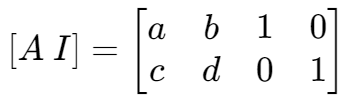在矩阵基本行变换后，使得
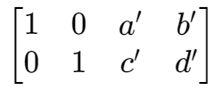则矩阵
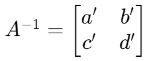特别地，对于一个二阶矩阵，其逆
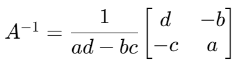